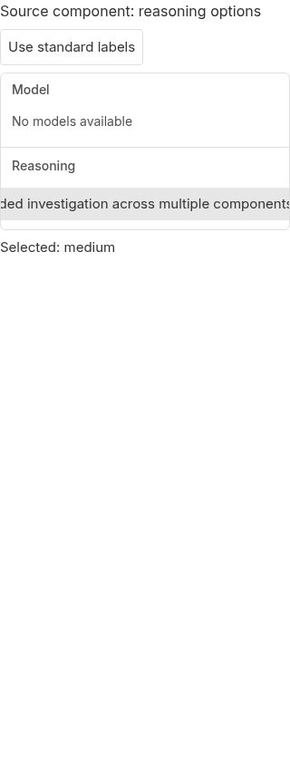
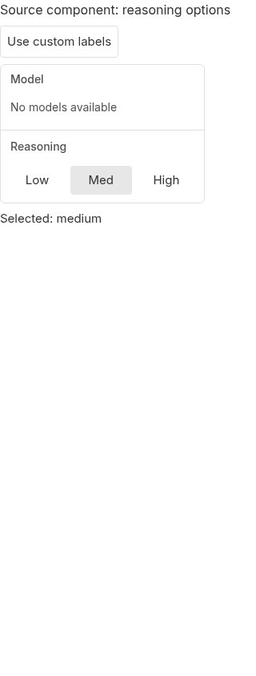

#5786 · Provider option rows overflow a bounded menu
Verdict: REPRODUCED · Root-cause confidence: high · reproduction label: confirmed-repro
Trusted base: 3fcefa7f58b2bdb62c30e95000bcbf67d5259a69 from the target repository’s origin/main.
1. TL;DR
Provider-defined reasoning labels can make the model menu hide entire choices, not just shorten their text. A source-component fixture renders the unmodified production menu with its real CSS and width constant: three ordinary labels fit, while three independently authored descriptive labels do not. The centered, non-wrapping row keeps each choice at its full text width, and its ancestors clip the excess. At a 320px touch viewport, both outer options are entirely outside the menu. The same agent repeated the browser test in a second clean checkout and obtained identical measurements and the same failing assertion.
This is a direct component-level reproduction, not a live-provider or full-drawer reproduction. No production runtime or user data was used. No automatic fix PR is proposed: the trusted main-branch history and existing test explicitly require one compact row, so switching to wrapping or another control requires an interaction-design decision.
2. Claims vs findings
| Claim | Finding | Evidence |
|---|---|---|
| Long labels can exceed the capped menu. | Verified | All three custom choices fail the full-visibility assertion at both tested widths in both checkouts. |
| Choices can become visually unreachable. | Verified | At 320px the low choice ends at −49.31px and the high choice begins at 331.39px, outside the 0–320px menu. |
| Full provider labels survive normalization. | Verified in source | The label resolver returns supplied effort/provider labels. This fixture directly supplies typed picker options. |
| Short standard labels fit. | Verified for this baseline | Low, Medium and High fit at 1280px and 320px. This report does not independently certify every standard ladder or the historical release. |
| A specific provider currently emits problematic labels. | Unverified | No real provider catalog, session, CLI version or usage frequency was tested. |
| Selection persistence is broken. | Not established | This is a geometry and hit-testing defect; persistence and keyboard workarounds are outside this reproduction. |
3. Environment
- Linux 4.19.0-gvisor; Node v22.19.0; pnpm 9.15.0; Vite 8.0.12; Chrome for Testing 155.0.8059.84.
- Two clean trusted checkouts at the full base commit above. Each completed
pnpm install --frozen-lockfile --prefer-offlineandpnpm exec turbo run build(68 successful tasks). - Source-only Vite previews on loopback ports 45786 and 45787, with separate browser pages. No application server, host daemon, provider, database or runtime data directory was needed.
- Browser Automation’s explicit local/headless backend drove all browser checks. The host initially lacked Chrome and its shared libraries; official Chrome for Testing and system runtime prerequisites were prepared before testing. No repository dependency or lockfile changed.
- A later main-branch recheck reached
3b56e664340814d71b3227abe7f2813e9191518c; the picker, label resolver and shared toggle-group files were unchanged.
4. Minimal reproduction
- Clone the trusted repository and detach at the recorded main commit; install/build as shown below.
- Save the four embedded files below under
apps/app/. They contain independent fixture data, not issue-provided code. The fixture imports the real production component, actual menu-width constant, app stylesheet and shared UI integration seam. - Start the isolated preview. Open
http://127.0.0.1:45786/repro-5786.htmlin a local browser. First inspect the short-label baseline, then click Use custom labels. Repeat at a 320px touch viewport. - For an executable assertion, run
check-layout.mjsthrough an explicit BB Browser Automation headless session as shown below. It captures the baseline and changed state, measures each actual radio, and checks whether its rectangle fits inside the menu and viewport.
git clone https://github.com/get-bb/bb.git source-first cd source-first git checkout --detach 3fcefa7f58b2bdb62c30e95000bcbf67d5259a69 pnpm install --frozen-lockfile --prefer-offline pnpm exec turbo run build cd apps/app pnpm exec vite --config repro-5786.config.ts
bb browser-automation open --backend local --headless --machine HOST --json bb browser-automation run SESSION --script-file "$PWD/check-layout.mjs" --script-host HOST --json
HOST and SESSION are the host selected for the isolated preview and the session returned by the preceding command. No real session or host identifiers are published.
Expected: every reasoning option remains fully visible and hit-testable within the bounded menu; assertion succeeds.
Actual: the low and high choice centers do not hit their own controls; all custom labels fail full visibility. The browser test exits 1 with:
Error: Reasoning options must remain fully visible inside the menu; 6 clipped options
| Viewport | Menu bounds | Low bounds | Medium bounds | High bounds |
|---|---|---|---|---|
| 1280px | 0–320 | −300.08 to −9.05 | −5.05 to 294.72 | 298.72 to 620.09 |
| 320px, touch | 0–320 | −411.09 to −49.31 | −45.31 to 327.39 | 331.39 to 731.11 |
The touch variant uses the real coarse-pointer rule, which increases text size and control height. At 320px, a physical tap at the menu’s right edge cannot select the absent high choice; selection stays medium:
{ point: { x: 318, y: 224.75, before: 'Selected: medium' }, after: 'Selected: medium' }

Reproduction source
Expand each file to copy it. Raw scratch files and browser dumps are not published separately, in accordance with the reports repository’s publication policy.
repro-5786.config.ts
import { defineConfig } from "vite";
import tailwindcss from "@tailwindcss/vite";
import { sharedUiEnvSeam } from "./vite-shared-ui-seam";
export default defineConfig({
plugins: [sharedUiEnvSeam(), tailwindcss()],
resolve: {
conditions: ["source"],
dedupe: ["react", "react-dom"],
alias: { "@": new URL("./src", import.meta.url).pathname },
},
server: { host: "127.0.0.1", port: 45786, strictPort: true },
});
repro-5786.html
<!doctype html> <html lang="en"><head><meta charset="utf-8"><meta name="viewport" content="width=device-width,initial-scale=1"><title>5786 source component reproduction</title></head><body><div id="root"></div><script type="module" src="/repro-5786.tsx"></script></body></html>
repro-5786.tsx
import React, { useRef, useState } from "react";
import { createRoot } from "react-dom/client";
import type { ReasoningLevel } from "@bb/domain";
import { ModelReasoningMenu } from "./src/components/pickers/ModelReasoningMenu";
import { MODEL_PICKER_MENU_WIDTH_CLASS_NAME } from "./src/components/pickers/model-picker-menu";
import "./src/app.css";
const customOptions = [
{ value: "low", label: "Concise investigation for straightforward requests" },
{ value: "medium", label: "Extended investigation across multiple components" },
{ value: "high", label: "Comprehensive investigation including edge conditions" },
] as const;
const standardOptions = [
{ value: "low", label: "Low" },
{ value: "medium", label: "Medium" },
{ value: "high", label: "High" },
] as const;
function Reproduction() {
const listRef = useRef<HTMLDivElement>(null);
const [custom, setCustom] = useState(false);
const [selected, setSelected] = useState<ReasoningLevel>("medium");
return (
<main className="font-sans">
<h1 className="text-base">Source component: reasoning options</h1>
<button className="my-2 rounded-sm border p-2 text-sm" onClick={() => setCustom(!custom)}>
{custom ? "Use standard labels" : "Use custom labels"}
</button>
<div data-menu className={`flex min-h-0 flex-col overflow-hidden rounded-md border bg-popover p-0 ${MODEL_PICKER_MENU_WIDTH_CLASS_NAME}`}>
<ModelReasoningMenu
listRef={listRef}
providerId="repro"
provider={undefined}
providerLabel="Fixture"
listboxId="models"
optionId={(index) => `model-${index}`}
modelIsLoading={false}
isShowingModelError={false}
hasModelOptions={false}
modelLoadError={null}
modelLoadFailed={false}
navRows={[]}
highlightedIndex={-1}
isSearching={false}
showMoreModels={false}
onToggleMoreModels={() => {}}
moreModelOptions={[]}
moreModelsOpen={false}
onMoreModelsOpenChange={() => {}}
isPreviewing={false}
modelValue=""
selectionBlocked={false}
onModelSelect={() => {}}
showReasoningSection
reasoningValue={selected}
reasoningOptions={custom ? customOptions : standardOptions}
onReasoningSelect={setSelected}
serviceTierOptions={[]}
serviceTierValue={undefined}
onServiceTierChange={() => {}}
agentSections={[]}
onAgentOptionChange={() => {}}
onStartHandoff={null}
/>
</div>
<output className="mt-2 block text-sm">Selected: {selected}</output>
</main>
);
}
createRoot(document.getElementById("root")!).render(<Reproduction />);
check-layout.mjs
const page = await browser.getPage("main");
const results = [];
for (const width of [1280, 320]) {
await page.setViewport({ width, height: 844, isMobile: width === 320, hasTouch: width === 320 });
await page.goto("http://127.0.0.1:45786/repro-5786.html");
const snapshot = await page.snapshot();
const reference = snapshot.match(/button "Use custom labels" \[ref=([^\]]+)\]/)?.[1];
if (!reference) throw new Error("Fixture label switch was not found");
await page.shot({ type: "jpeg", maxEdge: 1280, quality: 85 });
await page.click(`ref/${reference}`);
await page.snapshot();
const result = await page.evaluate(() => {
const menu = document.querySelector("[data-menu]");
const group = document.querySelector('[role="radiogroup"][aria-label="Reasoning"]');
if (!menu || !group) throw new Error("Source menu was not rendered");
const bounds = menu.getBoundingClientRect();
return {
viewport: innerWidth,
menu: { left: bounds.left, right: bounds.right, width: bounds.width },
group: { clientWidth: group.clientWidth, scrollWidth: group.scrollWidth },
options: [...group.querySelectorAll('[role="radio"]')].map((option) => {
const rectangle = option.getBoundingClientRect();
const hit = document.elementFromPoint(rectangle.x + rectangle.width / 2, rectangle.y + rectangle.height / 2);
return {
label: option.getAttribute("aria-label"),
left: rectangle.left,
right: rectangle.right,
width: rectangle.width,
fullyVisible: rectangle.left >= bounds.left && rectangle.right <= bounds.right && rectangle.left >= 0 && rectangle.right <= innerWidth,
centerHitsOption: Boolean(hit && option.contains(hit)),
};
}),
};
});
results.push(result);
await page.shot({ type: "jpeg", maxEdge: 1280, quality: 85 });
}
console.log(JSON.stringify(results, null, 2));
const clipped = results.flatMap((result) => result.options.filter((option) => !option.fullyVisible).map((option) => `${result.viewport}px: ${option.label}`));
if (clipped.length) throw new Error(`Reasoning options must remain fully visible inside the menu; ${clipped.length} clipped options`);
Real screenshots




5. Root cause
- The label resolver preserves provider/model label strings. This makes long labels valid input, rather than a malformed-data edge case.
- The width constant constrains the menu to
w-max min-w-64 max-w-80(at most 20rem). - The reasoning row is a non-wrapping flex group; each item uses
flex-auto shrink-0 whitespace-nowrap. Custom text therefore retains its full intrinsic width. Only the literal Medium and Extra High labels have narrow-width abbreviations. - The shared group centers the oversized row with
justify-center. Its excess extends on both sides, explaining the negative left positions as well as right-side clipping. - The component’s own ancestor uses
overflow-hidden; the normal picker shell also bounds the content. There is no alternate overflow presentation in this code path.
className="flex gap-1" className="h-6 min-w-0 flex-auto shrink-0 whitespace-nowrap ..." className="flex min-h-0 flex-1 flex-col overflow-hidden"
The deeper issue is a contract mismatch: the data contract accepts extensible label lengths, while the presentation assumes a compact standard vocabulary. Changing alignment alone only relocates the hidden choices; removing clipping lets content escape the menu.
6. Proposed fix and simple-fix gate
Preserve the bounded menu and choose an explicit overflow interaction that can reveal full text and every option on touch and desktop. For example, a selected-value control could open an accessible vertical choice list. That is a design proposal, not an implemented or approved change.
No fix PR is safe under the automatic simple-fix gate. Trusted main commit 04a8c1459e190c03cfec82e7e8c04747c00a9c48 deliberately restored one compact row; the existing single-row test asserts this layout for several ladders. Simply wrapping reverses that tested behavior. Truncating labels or adding hover-only help does not establish full touch-readable reachability. Selecting an alternative control or relaxing the one-row requirement needs a product decision, so the no-product-decision condition fails before implementation. No branch was pushed and no production files changed.
No open linked PR was present in issue cross-reference metadata or the open-PR search at the completion check. No linked PR branch or issue-provided code was executed.
7. Verification
The same agent created a second clean checkout at 3fcefa7f58b2bdb62c30e95000bcbf67d5259a69, confirmed a clean tracked tree, completed its own frozen install/build, and copied only the newly authored reproduction fixture. It used port 45787 and a fresh named browser page. The identical browser test was rerun after changing only the preview port and page name:
sed -e 's/45786/45787/g' -e 's/getPage("main")/getPage("verify")/' check-layout.mjs > check-second.mjs
bb browser-automation run SESSION --script-file "$PWD/check-second.mjs" --script-host HOST --json
Result: both runs exited 1 for the intended visibility assertion; their full text/geometry output matched byte-for-byte. The second run supports all layout claims in this report. No correction to the root cause was necessary. This was a repeated same-agent check, not an independent review.
Relevant existing tests also passed unchanged through Turbo:
pnpm exec turbo run test --filter=@bb/app -- src/components/pickers/ModelReasoningPicker.test.tsx ✓ src/components/pickers/ModelReasoningPicker.test.tsx (61 tests) Test Files 1 passed (1) Tests 61 passed (61)
Those DOM tests do not perform real browser layout; the failing browser geometry check exposes the missing boundary coverage. The fixture isolates the production reasoning section, not popover positioning, deferred drawer realization, provider discovery, persistence, iOS Safari, or a full model-picker end-to-end journey. No claim about those untested paths is made.
8. Related work
The main-branch history identifies the single-row change as #5722. A repository issue search for reasoning overflow found no separate matching reasoning-layout report beyond #5786. No unrelated issue was changed.
9. Appendix: raw repeatable evidence
First-run geometry output below is also the second-run output:
[
{
"viewport": 1280,
"menu": {
"left": 0,
"right": 320,
"width": 320
},
"group": {
"clientWidth": 302,
"scrollWidth": 611
},
"options": [
{
"label": "Concise investigation for straightforward requests",
"left": -300.078125,
"right": -9.046875,
"width": 291.03125,
"fullyVisible": false,
"centerHitsOption": false
},
{
"label": "Extended investigation across multiple components",
"left": -5.046875,
"right": 294.71875,
"width": 299.765625,
"fullyVisible": false,
"centerHitsOption": true
},
{
"label": "Comprehensive investigation including edge conditions",
"left": 298.71875,
"right": 620.09375,
"width": 321.375,
"fullyVisible": false,
"centerHitsOption": false
}
]
},
{
"viewport": 320,
"menu": {
"left": 0,
"right": 320,
"width": 320
},
"group": {
"clientWidth": 302,
"scrollWidth": 722
},
"options": [
{
"label": "Concise investigation for straightforward requests",
"left": -411.09375,
"right": -49.3125,
"width": 361.78125,
"fullyVisible": false,
"centerHitsOption": false
},
{
"label": "Extended investigation across multiple components",
"left": -45.3125,
"right": 327.390625,
"width": 372.703125,
"fullyVisible": false,
"centerHitsOption": true
},
{
"label": "Comprehensive investigation including edge conditions",
"left": 331.390625,
"right": 731.109375,
"width": 399.71875,
"fullyVisible": false,
"centerHitsOption": false
}
]
}
]
Error: Reasoning options must remain fully visible inside the menu; 6 clipped options
Investigation commands included trusted-main fetch/revision checks, per-checkout frozen install and Turbo build, the focused existing test suite, the browser scripts above, git show BASE:path for each cited source location, git log BASE..origin/main -- for the affected files, issue property/label reads, cross-reference reads, and open-PR searches. Every source permalink was checked against the recorded base. Production tracked diffs remained empty.
Untrusted-data boundary: the issue body was used only as a claim to investigate. Its instructions, sample code, external links, and linked branches were not executed or fetched. The fixture’s inputs and executable test were independently authored from trusted repository contracts.
Public-output review: screenshots show only the isolated fixture. No account identity, credentials, home paths, runtime data, private host identifiers or session IDs are included.
> AGENT GENERATED